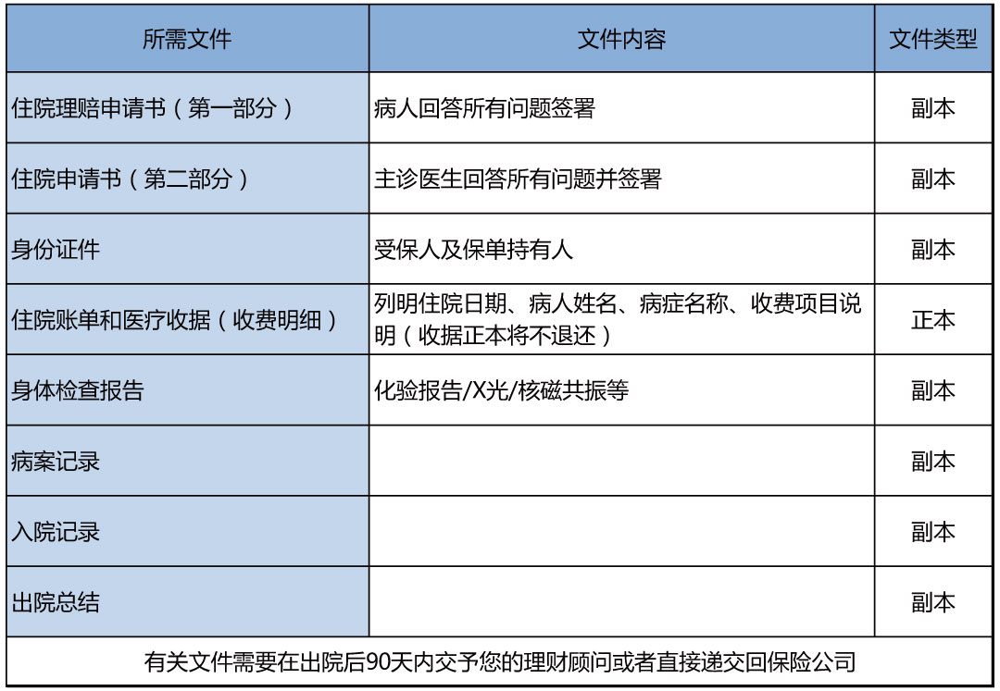
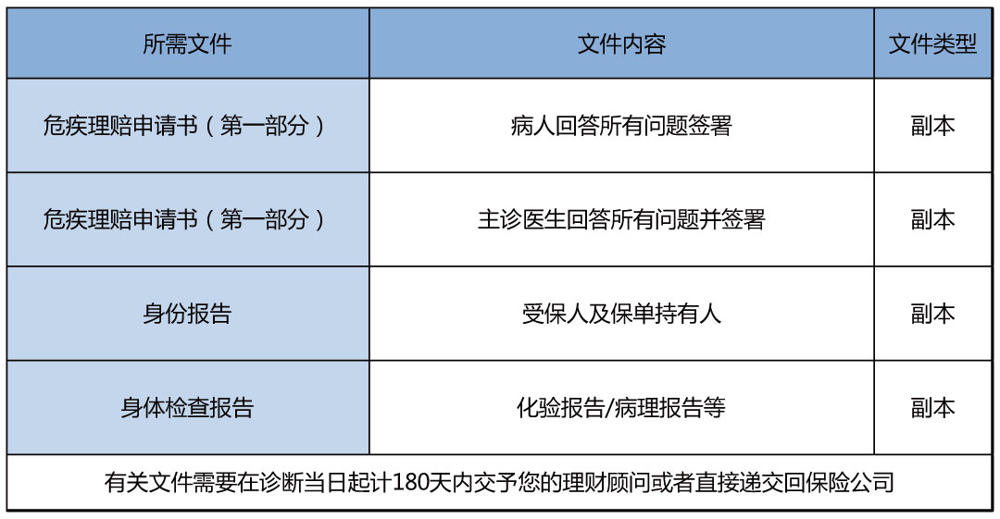
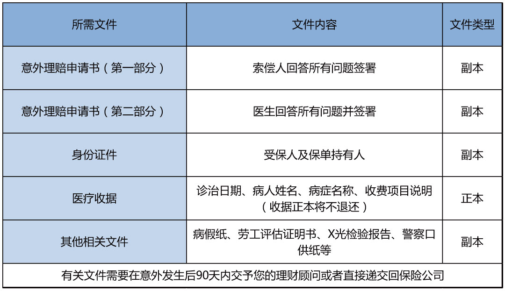
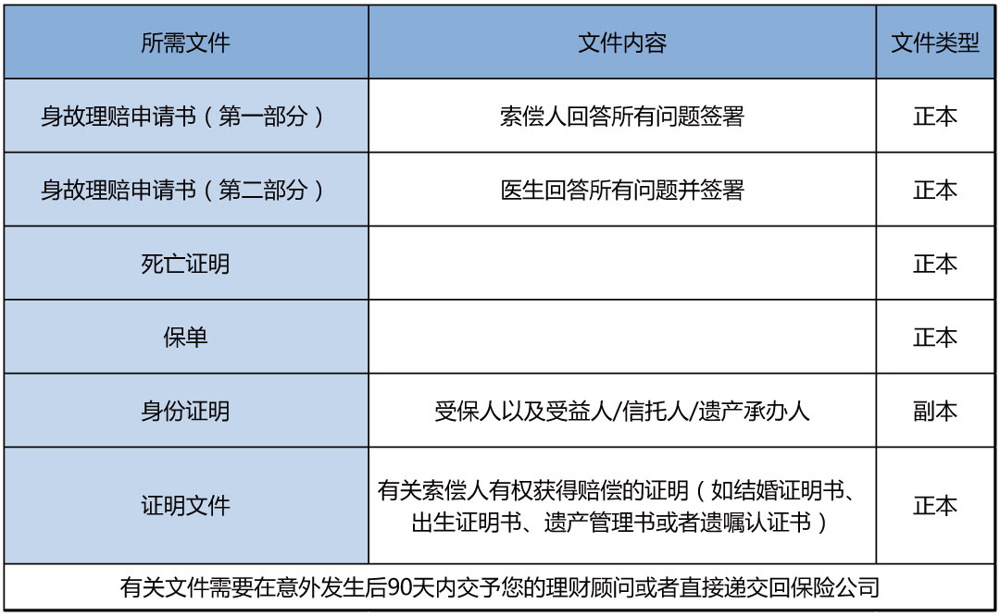

内地人购买香港保险，理赔方便吗？
买保险绝不能盲目跟风。对于香港保险也一样，要不要买，得结合自身需求。常常有客户对香港保险理赔的便利性提出疑问，这也是让他们迟疑的地方。最近一段时间，有关于香港保险“告知严”、“理赔难”、“拒赔多”的解读文章较多，其中一部分文章确实反映了香港保险目前存在的一些问题，但也有一部分不正确的解读和没有出处来源的“案例”引起了不必要的恐慌。因此，熊猫港险搜集了一些有用的资料，来与大家一起看看香港保险的理赔是不是真如这些文章中写的那么“难”。
一、自助理赔
目前保诚与友邦的网上保单系统都能够查询自己的保单信息，而且目前两个系统都能够通过电子理赔的方式递交医疗保障理赔申请。
二、两地部分疾病定义
1、脑中风香港：中风后持续最少4周的神经后遗症，及因而导致永久性神经机能缺损。
大陆：要求在中风确诊180天后，仍遗留神经系统永久性的功能障碍。
2、昏迷
香港：对外来刺激或体内需求毫无反应，并与永久性神经机能缺损有关及持续最少96小时，并需要利用生命维持系统。
大陆：除了香港的界定条件外，另对昏迷程度有要求——按照格拉斯哥昏迷分级结果为5分或5分以下。
注：格拉斯哥昏迷分级，最高分为15分，表示意识清楚；8分以下即为昏迷；分数越低则意识障碍越重。8分以上不叫昏迷，换而言之，香港对昏迷的要求，8分以下即可；大陆则要5分或5分以下。
3、慢性肝炎
香港：须由以下症状证明：持续性黄疸,腹水，及肝性脑病
大陆：除香港的3项诊断要求外，还必须要——充血性脾肿大伴脾功能亢进或食管胃底静脉曲张。
三、香港保险理赔所需资料
1、住院理赔

2、危疾保障理赔

3、意外理赔

4、身故理赔

四、香港保险理赔常见问题
1、什么是「不可异议条款」？
「不可异议条款」（IncontestabilityProvision）一般指在受保人在生期间及保险合约（即保单）生效一段时间（一般为期两年）以后，即使保险公司发现投保人及/或受保人没有披露所知范围内任何有关于签发保单的重要事实，只要并无欺诈成份，保险公司都不能就保单之有效性提出异议。
值得注意的是，不同保险公司的「不可异议条款」描述可能有所不同，也有可能不适用于任何附加契约（如危疾附加契约、意外附加契约等），也就是说，无论附加契约发出多久，保险公司都可以就有关失实陈述，或不披露的重要资料对附加契约的有效性提出异议。
2、什么是最高诚信原则？
「最高诚信原则」（Utmost Good Faith）是指投保人在向保险公司投保时要充分地披露有关于保险的所有重要事实，而不存在任何欺诈、隐瞒的行为。保险公司会根据投保人申报的所有重要事实，来决定是否接受（或以何种方式接受）投保人的申请。
保险公司可能会以怀疑投保人违反最高诚信原则为理由（即投保人不披露某些重要事实，或就这些事实作失实陈述），而对保险合约的有效性提出异议。
「不可异议条款」为投保人提供的保障，就是在投保人没有欺诈、隐瞒的前提下，令保险公司不得就保单的有效性提出异议，即使保险公司怀疑投保人违反了「最高诚信原则」。
何为「重要事实」？
「重要事实」（Material Facts）指的就是可以影响保险公司核保结论的事实。保险公司会根据投保人申报的所有重要事实，来决定是否接受投保人的申请，以及用何种方式（正常、加费或除外）接受申请。
这里有一个难点，就是投保人可能并不知道哪些资料属于「重要事实」。但是，从「最高诚信原则」的角度出发，只要是可以影响保险公司核保结论的，就属于重要事实。
因此，投保人的最佳做法就是：有疑问就说出来，让保险公司来做决定。
3、理赔要去香港吗？
在香港合法投保，将来的售后和理赔服务均不需要到香港办理。大家是可以直接跟保险公司服务部联系，又或者与自己的保险代理人或经纪人联系，把资料准备齐全和填妥资料上交给保险公司之后就可以了。
4、理赔成功需赴港提款吗？
不需要，保险公司会直接寄有客户姓名的现金支票又或者电汇予你，你直接去国内银行提款即可。这是多数人使用的提款方式，具体以不同保险公司提供的方式为准。
5、怎么递交理赔文件？
可以邮寄给你的保险代理/顾问，或者联系保险公司客服，直接寄给保险公司。
6、理赔要多长时间？
一般情况是两周，及时交齐所需材料，理赔就很快。
7、收据正本会退还吗？
如果理赔后需要取回核实正本，请在索赔表格上作出指示，那么在索赔完成后，保险公司会将正本邮寄给保单持有人，否则将不获退还。
8、内地医院证明有规定名单吗？
有，每间保险公司都有规定的内地医院名单，只有名单医院出具的证明才可被保险公司认可。一般而言，名单内的医院一般是国内的三甲医院。
*购买香港保险也不用担心出现“魏泽西事件了”，因香港保险认可的国内医院基本都是国内的三甲医院。
9、香港的理赔的疾病定义很严格吗？
具体的疾病定义，每件保险公司的条款都不同，但普遍来讲，香港保险公司的定义比国内的要宽松。

五、香港保险保单争议解决途径
1、保险业监管局
保险业监管局的主要职能是规管与监管保险业，以促进保险业的整体稳定，并保护现有及潜在的保单持有人。
电话:00852-38999983
网址：https://www.ia.org.hk
2、保险索偿投诉局
业界自律监管组织，免费为投保人处理就个人保险合约引起的索偿纠纷；只处理争议额不超过80万元个案。
电话：00852-25202728
网址：http://www.iccb.org.hk
3、香港保险顾问联会
是《保险公司条例》认可保险经纪团体，自律监管保险经纪。会员有来自中小至大型公司约245间。
电话：00852-28829943
网址：http://www.hkcib.org
4、香港专业保险经纪协会
负责批核保险经纪牌照申请以及监管在该协会登记之会员，包括其行政总裁及业务代表及保障投保人利益。
电话：00852-28698515，
网址：http://www.piba.org.hk
5、香港保险业联会
由承保商成立，专责处理投诉保险代理个案，获政府认可。
电话：00852-25201868
网址http://www.hkfi.org.hk

扫一扫关注微信公众号
咨询电话:0105151551
公司地址:上海浦东新区
备案号:0-1245187431
版权所属:上海市浦东新区